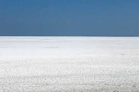

Rann of Kutch

The Great Rann of Kutch is a salt marsh located in the Thar Desert in the Kutch District of Gujarat, India. It is about 7,505.22 square kilometres (2,897.78 sq mi) in size and is reputed to be one of the largest salt deserts in the world. This area has been inhabited by the Kutchi people.
The name "Rann" comes from the Hindi word ran meaning "desert". The Hindi word is derived from Sanskrit/Vedic word iriṇa attested in the Rigveda and Mahabharata.

HOW TO REACH ?
Nearest Airport:Bhuj
Nearest Railway Station: Bhuj
Nearest Bus Stand:Rann of Kutch